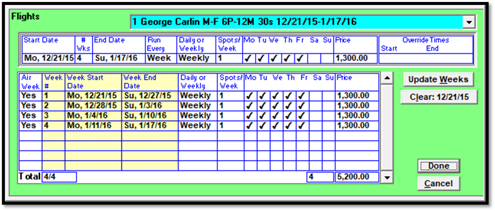
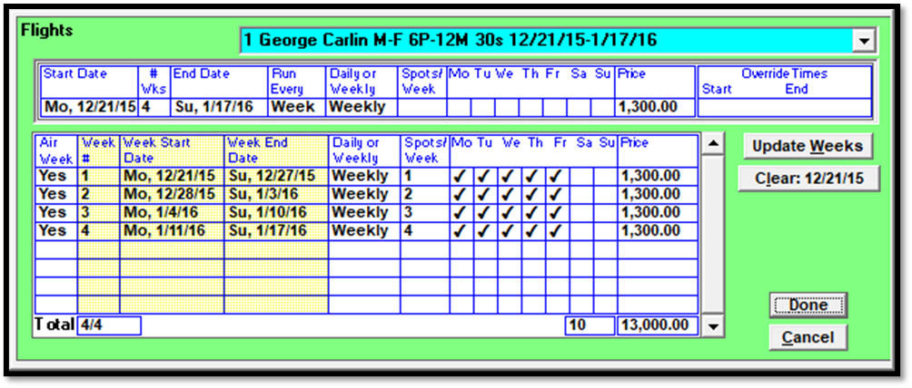
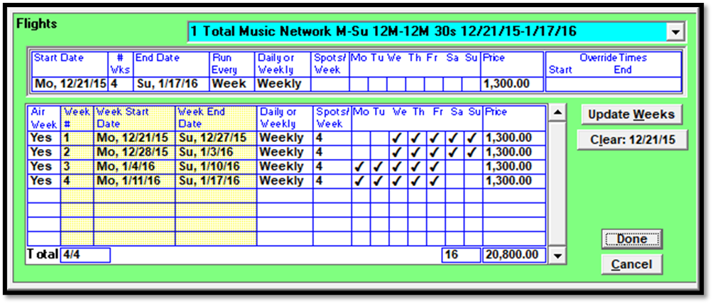

Flights Screen
The Flights screen can be used to alter an existing line in numerous ways by allowing direct access to the flight days, times, spot counts, and rates, for each week of the line. To access the Flights screen, first select a contract line, then press the Flights button. (Access to the Flights screen is controlled by a setting in User Options, so it’s possible that not all users will have access to the Flights screen.)
The picture below shows an example of the Flights screen. At the top of the screen is a dropdown menu that is used to select different contract lines. Below that is the header area, which can be used to add weeks or alter existing weeks on the selected contract line. The individual weeks of the selected contract line are shown in the center of the screen.

The Update Weeks button is used to update the line section using the entered header information. The Clear button will clear the line section – for example, because it was entered incorrectly and needs to be completely cleared and redone.
Header Area
The Header Area is used to view or set the basic parameters for the contract line, using the following settings:
Start Date: the start date of the line.
# Weeks: the total number of weeks for the line, using the start and end date.
End Date: the end date of the line.
Run Every: when using the header area to update the weeks, this field can be set to week, 2nd, 3rd, or 4th, to make the line have spots every week, or every two weeks, and so on.
Daily or Weekly: used to set the line to have daily or weekly spots.
Spots per Week: the number of spots that should air each week.
Mo-Su: similar to the override screen, this allows users to select the valid days for the line.
Price: the spot price that will be applied to each spot.
Override Start and End Times: allows users to enter override start and end times if the daypart times should be different from the selected daypart.
When using the Flights screen to add spots to a new line, after filling out the header area, press the Update Weeks button to create weeks based on the entered header information. The same technique could also be used to alter an existing line, for example, by changing the end date to expand the length of the line.
Week Area
The Week Area shows each individual week that makes up the selected contract line. Many of the fields in the week area can be edited, making it possible for each week of the contract to have different spot counts, valid days, and spot prices.
Air Week: can be set to Yes or No. No means the line is not airing that week.
Week #: begins at one and numbers each week of the contract line.
Week Start Date and End Date: the week dates are shown for each week of the line.
Daily or Weekly: shows whether the line is a daily or weekly buy line. This can only be altered in the header area.
Spots/Week: the number of spots per week for each week. This can be changed by typing in the field and changing the number.
Mo-Su: checkmarks are used to indicate the valid days of the week. Individual days can be turned on by checking them on, or turned off by unchecking them.
Price: the spot price per week can be edited here.
After making changes on the Flights screen, press Done to apply the changes, or press Cancel to discard the changes.
Flights Screen Examples
The picture below shows an example where the spot counts per week varies per week, with week 1 having one spot per week, week 2 having two spots per week, and so on. This is achieved by clicking the “Spots/Week” section in the Week area and changing the spot counts.

The picture below shows an example where the valid days varies per week, with weeks 1 and 2 having Monday and Tuesday unchecked, and weeks 3 and 4 having Saturday and Sunday unchecked. This is achieved by clicking the day checkboxes in the Week area and altering them as needed.

The picture below shows an example where the price per week varies. Week 1 has a spot price of 1,000, week 2 has a spot price of 500, and weeks 3 and 4 have a spot price of 995. This is achieved by altering the spot price for the different weeks.